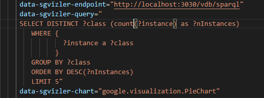
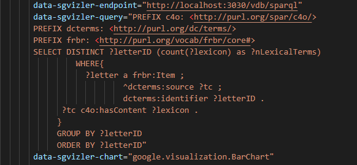
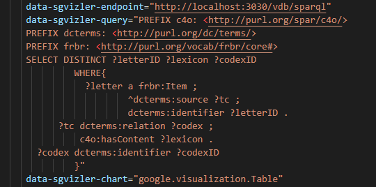
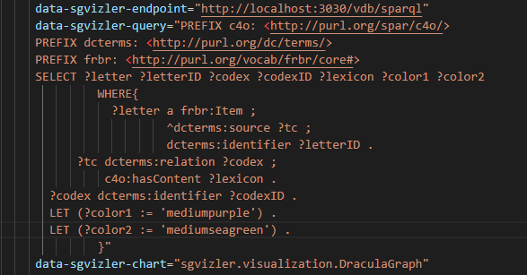

Visualization¶
There are many alternative ways to explore semantic-rich data, each with varying levels of effectiveness. A flat index, albeit useful as a starting point to display and navigate data more efficiently, tends to collapse the depth of the data itself and to hide its most important characteristics. Instead, it may be more effective to adopt an approach based on multiple visualization strategies which support a much better sense-making of data through the use of charts and other visual elements that provide an accessible way to see and understand correlations and patterns in data.
In a first phase of experimentation, Sgvizler 0.6 (http://mgskjaeveland.github.io/sgvizler/) [1] has been used to visualise the results of SPARQL queries into charts or HTML elements.
In a following phase, a series of Javascript libraries such as D3.js and Leaflet have been used to visualize certain aspects of the data belonging to the dataset. The results can be found in the visualization.html file contained in the visualization-files directory, at ../visualization-files.
Sgvizler Setup¶
In order to set up Sgvizler, you need a web host running on your machine and a SPARQL endpoint.
XAMPP, which includes the Apache web server, can be used to set up a server on a computer.
You can download XAMPP here: https://www.apachefriends.org/download.html.
Run xampp-control.exe as administrator.
Click on the Start button next to the Apache module.
Important note: do not install XAMPP under C:\Program files on Windows 10, because it may cause problems with permissions later. Put it in root (C:\) instead.
Now you may open a web browser and go to http://localhost:80, or alternatively just http://localhost. You are now in contact with the web server you just installed and started.
Locate the htdocs folder of the directory in which XAMPP was installed.
Important note: on some computers, another server may already be listening to port 80. If so, you may need to terminate that server or move the XAMPP server to another port.
Save the following code snippet into a new file called quick-start.html and put this file into the htdocs folder.
<html>
<head>
<title>MWE</title>
<script type="text/javascript" src="https://code.jquery.com/jquery-1.12.4.js"></script>
<script type="text/javascript" src="https://www.google.com/jsapi"></script>
<script type="text/javascript" src="http://mgskjaeveland.github.io/sgvizler/v/0.6/sgvizler.js"></script>
<script>
$(document).ready(
function (){ sgvizler.containerDrawAll(); }
);
</script>
</head>
<body>
<h1>Sgvizler</h1>
<p>Competency Question</p>
<div id="example"
<!--insert endpoint-->
data-sgvizler-endpoint=""
<!--insert SPARQL query (prefixes can be added as well)-->
data-sgvizler-query=""
<!--insert type of visualization chart-->
data-sgvizler-chart=""
<!--additional chart options may go here-->
data-sgvizler-chart-options=""
<!--dimensions of the div element. Change them however you like-->
style="width:800px; height:400px;">
</div>
</body>
</html>
Now download Fuseki here: http://jena.apache.org/documentation/fuseki2/#download-fuseki.
Once downloaded, start the Fuseki server by either:
- double-clicking on the
fuseki-server.jarfile, or - entering the following command in the command prompt:
fuseki-server --mem --update --localhost /DATASETNAME
Important note: DATASETNAME can be any string you want. It is the name of the dataset in which you will load the RDF graph.
Open a web browser and go to http://localhost:3030. You are now in contact with the Fuseki server you just started.
Go to the control panel and choose the dataset /DATASETNAME (if already existing, otherwise create it), then uplodad the file vdbRdf.rdf.
Edit the file quick-start.html so the data-sgvizler-endpoint is set to "http://localhost:3030/DATASETNAME/query", "http://localhost:3030/DATASETNAME/sparql" or "http://localhost:3030/DATASETNAME".
Go to http://localhost/quick-start.html in your web browser to see that it has changed.
Now you can use Sgvizler to visualise the results of a query to your own SPARQL endpoint on a web page hosted on your own web server.
Examples¶
Visualization charts generated with Sgvizler have been used to visualize some example queries (shown here as static, downscaled screenshots).
A pie chart (data-sgvizler-chart="google.visualization.PieChart") is very useful to get an immediate, general view on how the RDF graph is structured.
The following pie chart visualizes a query that returns the five most numerous classes in terms of number of instances.
The specification of the pie chart function google.visualization.PieChart includes exactly two variables:
- the pie slice label (any datatype);
- the pie slice value (number).
In this example, the slice label is the URI of a class, while the slice value is the counting of the instances of that class.
A code snippet containing the query visualized in the pie chart is shown below.
Another good visualization for representing quantitative values associated with qualitative values (e.g. counts) is a bar chart (data-sgvizler-chart="google.visualization.BarChart").
The following bar chart visualizes a query that returns the letter exemplars by ID along with the number of technical terms extracted from them.
The specification of the bar chart function google.visualization.BarChart includes at least two variables:
- the category label, i.e. the x-axis (any datatype);
- a separate y-axis series (number).
In this example, the values on the x-axis represent the letters, while the values on the y-axis represent the number of technical terms. Note that a bar chart uses horizontal bars to express the relationship between the variables.
A code snippet containing the query visualized in the bar chart is shown below.
The table (data-sgvizler-chart="google.visualization.Table") is a simple visualization method for showing the result set in a clean, structured way.
The following table visualizes a query that returns the letter exemplars by ID and the technical terms that have been extracted from them and that are related to a codex (which is identified by an ID as well).
The specification of the table chart function google.visualization.Table does not include any particular requirement, except for the fact that each column must be of the same datatype.
The table includes some formatting features, e.g., rows can be sorted by clicking on columns.
A code snippet containing the query visualized in the table is shown below.
A particular custom-made visualization function offered by Sgvizler is the graph (data-sgvizler-chart="sgvizler.visualization.DraculaGraph").
The following graph visualizes a query that is identical to the last: it returns the letter exemplars by ID and the technical terms that have been extracted from them and that are related to a codex (which is too identified by an ID).
In this case, the letters are represented as purple nodes. The codices are represented as green nodes. The technical terms are represented as edges between nodes.
The specification of the graph chart function sgvizler.visualization.DraculaGraph includes at least four and up to seven variables:
- the source ID (any datatype);
- the source label (string);
- the target ID (any datatype);
- the target label (string);
- the edge label (string);
- the source node color (string);
- the target node color (string).
The graph can be formatted and stylized in a variety of ways (e.g. the node radius, fontsize, height, border, padding, etc.) by adding options to the data-sgvizler-chart-options.
Nodes of the visualized graph can be freely arranged on the HTML page.
A code snippet containing the query visualized in the graph is shown below.
For a complete list of chart types, chart functions and instructions on how to use Sgvizler, please see the full documentation at http://mgskjaeveland.github.io/sgvizler/.
Data visualization of the edition using Javascript libraries¶
A better fleshed out visualization of the semantic digital edition has been produced through the use of some Javascript libraries such as D3.js and Leaflet. You can find the visualization page here: ../visualization-files/visualization.html